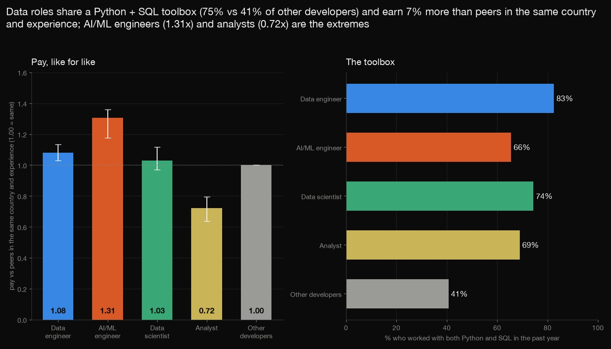
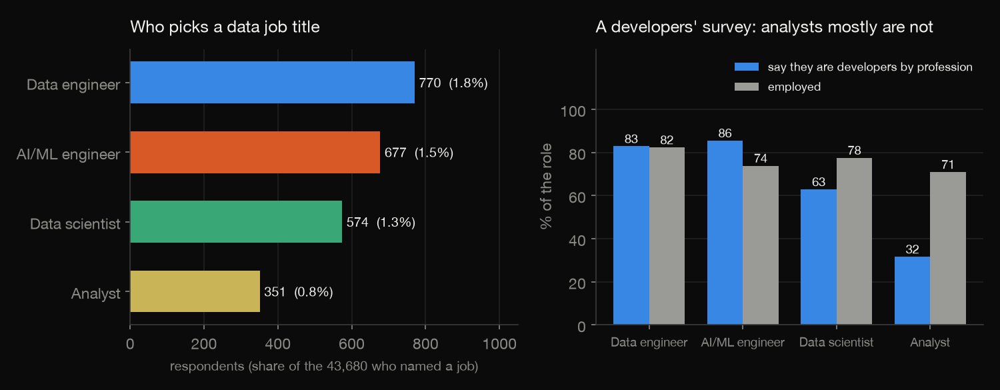
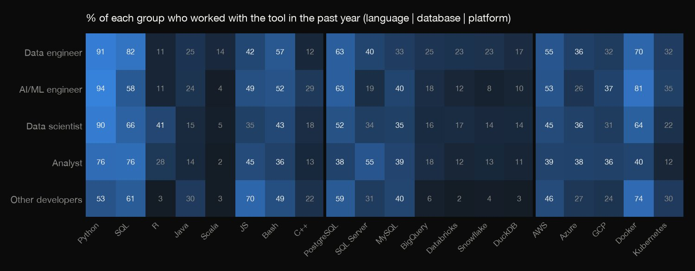
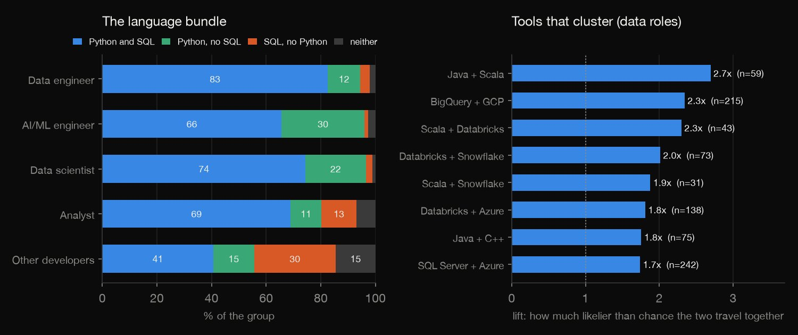
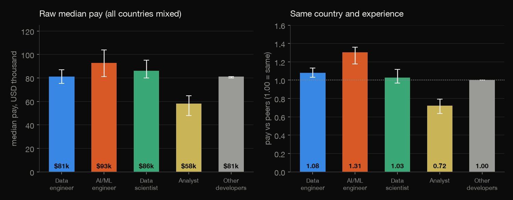
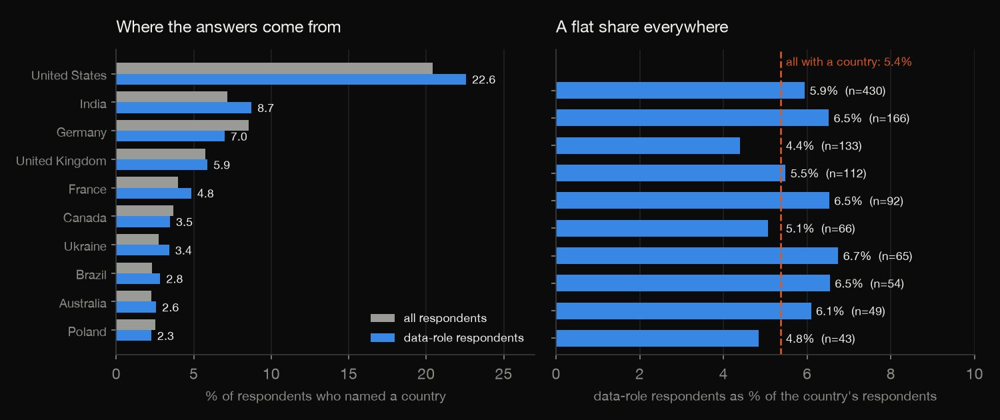

Python · Survey analytics · 2026-10
Who Does Data Work, and Does It Pay?
In Stack Overflow's 2025 survey 5.4% of 43,680 respondents who named a job hold a data role; 75% use Python and SQL against 41% of others, and like for like they are paid 1.07x peers (AI/ML 1.31x, analysts 0.72x).

A self-selected online survey with no weights: shares are of respondents, not of any workforce, and country or pay is blank for many (2025: 28% of other developers and 20% of data roles gave no country). Role is one job title chosen per person; the 2024 and 2025 role lists differ. Pay is self-reported, converted to nominal dollars (no local purchasing power), and the like-for-like index controls only country, experience and employment type. Cells under 30 are suppressed. Source: Stack Overflow Annual Developer Survey 2024 and 2025, ODbL 1.0.
01 — The problem
Everyone says data and ML jobs are everywhere and pay more. Who actually calls themselves a data engineer, AI/ML engineer, data scientist or analyst in a big developer survey, what do they work with, are they paid more once country and experience are held fixed, and where are they?
The project follows DataCamp's "Data Science and MLOps Landscape in Industry" (roles and skills, geography). The Stack Overflow Annual Developer Survey is, in its own words, the largest survey of people who code, with each respondent's job, tools, pay and country under an open database licence, which also makes it a good place to practise reading a self-selected sample honestly.
02 — What I built
Two survey files (49,191 and 65,437 respondents), reduced to aggregates only:
- The roles: who chooses each data job title, and who is missing (the analysts who do not call themselves developers).
- The tools: languages, databases, clouds and libraries by role, the Python and SQL bundle, and which tool pairs travel together.
- The pay: medians with exact intervals, then pay against peers in the same country and experience band, employees only.
- The geography and the sample: data respondents by country, and what a survey with no weights can and cannot say.
- Check:
check.pystreams the CSVs and recounts all 2,328 numbers in plain Python.
03 — How it was built
- 01
Download the two survey files
The 2025 and 2024 response files (300 MB together) come from the public Stack Overflow repository that the survey site's own catalogue links, with no login and an ODbL licence. They are fetched with checksums and never committed; the old direct zip links now give 404.
FILES = {f"so{y}.csv": BASE.format(y=y) for y in (2025, 2024)} - 02
Define the roles
A role is the one job description a respondent picked: data engineer, AI/ML engineer, data scientist, data or business analyst (2024: a merged data-scientist box). The comparison group is developers by profession with none of them. Because it is one choice per person, the roles do not overlap.
g["Any data role"] = np.logical_or.reduce([g[l] for l in labs]) - 03
Find the tools that travel together
For everyone in a data role who answered the language, database and platform questions, every pair of the 20 tools with at least 30 users together gets its count, its lift (how much likelier than chance) and its Jaccard overlap.
pairs.append({"tool_a": a, "tool_b": b, "n_a": na, "n_b": nb, "n_both": nab, "n": N, "lift": nab * N / (na * nb), "jaccard": nab / (na + nb - nab)}) - 04
Compare pay like with like
Pay is divided by the median of all employees in the same country and the same experience band (cells of 30 or more), so 1.00 means paid like peers; each role's index is the median of those ratios, with an exact distribution-free interval from the binomial order statistics.
d["_ratio"] = (d["_pay"] / d["_cm"]).where(s & (d["_cn"] >= MIN)) - 05
Recount it all without the libraries
check.pystreams the two CSVs with the csv module and recomputes every count, share, median, percentile, interval, lift and ratio with plain loops, writing the median interval's binomial sum by hand: 2,328 numbers to a relative tolerance of 1e-9.r["ratio"] = r["comp"] / med[(r["country"], r["band"])] if r["s"] and (r["country"], r["band"]) in med else None
04 — Results
Who holds a data role. 2,372 of the 43,680 people who named their job in the 2025 survey (5.4%) chose a data role: 770 data engineers (1.8%), 677 AI/ML engineers (1.5%), 574 data scientists (1.3%) and 351 analysts (0.8%). In 2024, with one merged box for data scientists and ML specialists, the share was 4.5%; the two forms do not list the same boxes (2025 has AI/ML engineer and applied scientist and splits the merged data-scientist box), so the two years are not like for like. The n column counts respondents who chose the role; Devs is the share who say they are developers by profession. Only 32% of the analysts call themselves developers by profession, against 63% of data scientists, 83% of data engineers and 86% of AI/ML engineers: this is a developers' survey, so the analysts who answer it are the code-writing minority.
| Role | n | Share | Devs |
|---|---|---|---|
| Data engineer | 770 | 1.8% | 83% |
| AI/ML engineer | 677 | 1.5% | 86% |
| Data scientist | 574 | 1.3% | 63% |
| Analyst | 351 | 0.8% | 32% |
| Any data role | 2,372 | 5.4% | 71% |
| Other devs | 35,778 | 81.9% | 100% |

What marks each role. Python is near-universal in the three technical roles (91% of data engineers, 94% of AI/ML engineers, 90% of data scientists) and 76% of analysts, against 53% of other developers; R marks the data scientists (41% against 3%); SQL is highest for data engineers (82%) and analysts (76%); SQL Server is the analysts' database (55%); the warehouse names (Snowflake 23%, Databricks 23%, BigQuery 25% of data engineers) are rare among other developers (4%, 2% and 6%); JavaScript is the other developers' (70% against 42% of data roles). The two groups are not built alike: a data role is anyone who chose the title (students and academics included, and only a third of the analysts are professional developers), while 'other developers' are professionals only, so the raw tool and pay comparisons are partly professionals against a mixed group. The like-for-like pay index is less affected, since its peers are all employees in the same cell.

The 2024 file (the 2025 file dropped the question) also asks about libraries: 82% of data scientists and ML specialists use pandas, 75% scikit-learn, 57% PyTorch and 44% TensorFlow, while data engineers lean on Spark (42%) and Kafka (24%); other developers use pandas at 19% and Spark at 4%. In the table, DS/ML is the merged data-scientist and ML box, Eng. the data engineers and Others the other developers.
| 2024 | DS/ML | Eng. | Others |
|---|---|---|---|
| Pandas | 82% | 66% | 19% |
| NumPy | 81% | 47% | 19% |
| scikit-learn | 75% | 24% | 8% |
| PyTorch | 57% | 13% | 10% |
| TensorFlow | 44% | 14% | 9% |
| Hugging Face | 29% | 6% | 4% |
| Spark | 19% | 42% | 4% |
| Kafka | 8% | 24% | 12% |
| mlflow | 17% | 5% | 1% |
How the tools go together. 75% of data-role respondents work with both Python and SQL against 41% of other developers; with a cloud (AWS, Azure or Google Cloud) as well it is 63% against 31%. AI/ML engineers are the Python-without-SQL group (30%), analysts the SQL-without-Python one (13%, against 3% of data engineers), and 36% of data scientists use Python and R together (3% of other developers). Among data roles the pairs that travel together furthest above chance are Java and Scala (lift 2.7), BigQuery and Google Cloud (2.3) and Scala and Databricks SQL (2.3). A lift of 1 means two tools are used together as often as chance would give.

Paid a little more, and very differently by role. Raw, the median data-role employee earns $81,210 a year and the median of other developers is $81,210, the same to the dollar; by role it runs from $58,187 for analysts to $92,812 for AI/ML engineers. Read the tie as 'about the same', not as parity: pay piles up on round local-currency amounts, 222 people in the pay sample are paid exactly $81,210, and the most common figure, $69,609 (277 people), is exactly 60,000 in European Euros at the survey's conversion rate. The Index column divides each person's pay by the median of everyone in the same country and the same years-of-experience band, and takes the median by role. Compared with peers in the same country and the same years of experience, data roles together are paid 1.07 times the peer median (95% interval 1.04 to 1.11): AI/ML engineers 1.31 (1.18 to 1.36), data engineers 1.08, data scientists 1.03 (the interval 0.97 to 1.12 includes 1), analysts 0.72 (0.64 to 0.79). The 2024 file shows a similar pattern: data scientists and ML specialists 1.15, data engineers 1.04, analysts 0.79.
| Role | n | Median | Index |
|---|---|---|---|
| Data engineer | 415 | $81k | 1.08 |
| AI/ML engineer | 288 | $93k | 1.31 |
| Data scientist | 285 | $86k | 1.03 |
| Analyst | 150 | $58k | 0.72 |
| Any data role | 1,138 | $81k | 1.07 |
| Other devs | 15,526 | $81k | 1.00 |

In the United States alone the median employee data scientist earns $138,000, data engineer $150,000, AI/ML engineer $189,500 and analyst $100,000, against $155,000 for other developers. Country by country, data roles' median pay against other developers' runs from 0.80 (Ukraine) to 1.13 (France) in the 9 countries with 30 or more of each; in 8 of them the other developers' median lies inside the data roles' interval, so most of the gaps are within the noise. Pay is Stack Overflow's own dollar conversion of what respondents reported, at market rates, so it is not adjusted for what a dollar buys in each country.
| Country | n | Median | vs others |
|---|---|---|---|
| United States | 302 | $150k | 0.97 |
| Germany | 84 | $93k | 1.12 |
| United Kingdom | 83 | $86k | 0.90 |
| India | 65 | $17k | 0.85 |
| France | 57 | $70k | 1.13 |
| Canada | 42 | $96k | 1.06 |
| Brazil | 37 | $33k | 1.07 |
| Ukraine | 37 | $24k | 0.80 |
| Spain | 31 | $70k | 1.13 |
Where, and what a self-selected survey is. Data-role respondents are 22.6% from the United States, 8.7% from India, 7.0% from Germany and 5.9% from the United Kingdom, close to those countries' shares of all respondents (20.4%, 7.2%, 8.5% and 5.8%). Inside the ten biggest countries a data role is 4.4% (Germany) to 6.7% (Ukraine) of respondents against 5.4% overall: the geography of the data roles in this survey is the geography of the survey. Only 13 countries have 30 or more data-role respondents.

No weights come with either file (0 weight columns), so everything is unweighted and the sample is whoever chose to answer: 52% are aged 18 to 34, 81% of those who answered have a Stack Overflow account, 76% are developers by profession and 20% of those naming a country are American. Dropping the United States moves the data-role share from 5.43% to 5.33%, so it is not an American artefact, but it is still the share of this sample, not of any workforce. In 2025, 28% of other developers and 20% of data roles left the country blank (2024: 10% and 2%), and 58% of data roles against 54% of other developers gave a pay figure.
| 2025 sample | Share |
|---|---|
| Named a country | 72% |
| No country, other devs | 28% |
| No country, data roles | 20% |
| Aged 18 to 34 | 52% |
| SO account (of answerers) | 81% |
| Americans, of those naming one | 20% |
| Gave pay, data roles | 58% |
05 — What I'd do next
- Reweight the sample to an outside count of developers by country and age (national labour statistics) so the shares mean something about workforces, not just respondents.
- Follow the same people-like-me comparison across more survey years, once a consistent role definition is built across years (the 2024 and 2025 lists differ), to see whether the AI/ML premium is new.
- Add the work that is not a job title (people who write Python and SQL under another title) to see how much of the data landscape the single job question hides.